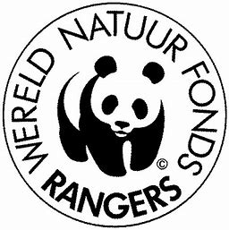

☰
Homepage
Pagina van Stijn
Game
Uitleg game
Goede doel van stijn

mijn gekozen goede doel is wereld natuur fonds
Wat is wereld natuur fonds
zij willen van natuur verlies, naar natuur winst gaan zodat de aarde leefbaar blijft voor iedereen